Crab SED v6 64748 reselect44 - Scheme B - Double-Rayleigh MC Aperture
Scheme B - Double-Rayleigh MC Aperture-conditioned Response. v6 chain for v6_64748_nhit100_reselect44_split56_miss030_double_rayleigh, reusing the v6_64748_nhit100_highEplus1_split56 nominal inputs and Stage C event reduction. The first Nhit bin is [100,200); >=6 remains a diagnostic tail outside Stage F/G.
Executive Check
| Gate | Status | Evidence |
|---|---|---|
| run id | pass | v6_64748_nhit100_reselect44_split56_miss030_double_rayleigh |
| Nhit binning | pass | [100,200) |
| tail policy | pass | 7 >=6 tail cells, 0 included |
| selector | pass | 44 fit cells; 10 forced in, 5 forced out |
| selector 75/90 swap | pass | cell 75 included=True; cell 90 included=False; total=44 |
| Stage C files | pass | 3,969 processed, missing time 0, entry mismatch 0 |
| Stage E signal | pass | formal sigma 73.491 |
| Stage F fit | pass | preferred logpar |
| Stage G points | pass | 7 Nhit points, 11 predE points |
| metadata pollution | passed | 0 legacy main-input path/token offenders |
Slurm Jobs
All heavy recomputation stages are intended to run through the Slurm dependency chain. This table is populated from PIPELINE_JOB_IDS when available.
| Stage | Job | State | Elapsed | Exit | Name |
|---|---|---|---|---|---|
| stage_a_aperture | 65164 | COMPLETED | 00:16:45 | 0:0 | resp_a_v6_64748_r44_dr |
| stage_b_double_rayleigh | 65167 | COMPLETED | 00:00:22 | 0:0 | psf_b_v6_64748_r44_dr |
| stage_d_to_g | 65168 | COMPLETED | 00:03:47 | 0:0 | v6_64748_r44_dr_dg |
| report | 65171 | COMPLETED | 00:02:48 | 0:0 | v6_64748_r44_dr_report |
Inputs And Outputs
The main chain uses the 64748 observation eval root and its recovered-time tree. The response, PSF, aperture response, fit, and SED products are all under the new run namespace.
| Field | Value |
|---|---|
| Run id | v6_64748_nhit100_reselect44_split56_miss030_double_rayleigh |
| Scheme | B - Scheme B - Double-Rayleigh MC Aperture-conditioned Response |
| Input commit SHA | 872bb5b8d8615f027650ad9f0f0387ba174adfe6 |
| Analysis response | /mnt/mydisk/server/projects/energy_reconstruction/apply/output/stage_a_v6_64748_nhit100_reselect44_split56_miss030_double_rayleigh_aperture_conditioned/response_2d_v6_64748_nhit100_reselect44_split56_miss030_double_rayleigh_aperture_conditioned.npz |
| Observation root | /mnt/mydisk/WCDA_observation_eval_64748 |
| Recovered time root | /mnt/mydisk/WCDA_observation_eval_64748/recovered_time |
| MC candidate cache | /mnt/mydisk/WCDA_simulation_binned_response_v6_64748_nhit100_highEplus1_split56_candidate |
| Model run dir | /mnt/mydisk/server/projects/energy_reconstruction/runs/theta_recoxy_position_embed_noemax_no_core_cut_64748 |
| Fit selector | ../config/cell_selector_v6_64748_nhit100_reselect44_split56_miss030_fit.csv |
| Stage C input entries | 254,436,994 |
| After configured-cell selection | 113,938,262 |
| Stage | Primary output |
|---|---|
| Prepare/cache | /mnt/mydisk/WCDA_simulation_binned_response_v6_64748_nhit100_highEplus1_split56_candidate |
| Stage A response | apply/output/stage_a_v6_64748_nhit100_highEplus1_split56 (reused) |
| Stage B PSF | apply/output/stage_b_v6_64748_nhit100_reselect44_split56_miss030_double_rayleigh |
| Analysis response | apply/output/stage_a_v6_64748_nhit100_reselect44_split56_miss030_double_rayleigh_aperture_conditioned |
| Stage C observation | apply/output/stage_c_v6_64748_nhit100_highEplus1_split56 (reused) |
| Stage D background | apply/output/stage_d_v6_64748_nhit100_reselect44_split56_miss030_double_rayleigh_annnorm |
| Stage E signal | /mnt/mydisk/server/projects/energy_reconstruction/apply/output/stage_e_v6_64748_nhit100_reselect44_split56_miss030_double_rayleigh_containment1_annnorm/runs/v6_64748_nhit100_reselect44_split56_miss030_double_rayleigh_stage_e_containment1_annnorm |
| Stage F fit | /mnt/mydisk/server/projects/energy_reconstruction/apply/output/stage_f_v6_64748_nhit100_reselect44_split56_miss030_double_rayleigh/runs/v6_64748_nhit100_reselect44_split56_miss030_double_rayleigh_stage_f |
| Stage G SED | /mnt/mydisk/server/projects/energy_reconstruction/apply/output/stage_g_v6_64748_nhit100_reselect44_split56_miss030_double_rayleigh/runs/v6_64748_nhit100_reselect44_split56_miss030_double_rayleigh_stage_g |
Selector Rule
preserve original MC-ridge fit cells; add at most one adjacent higher predE bin per Nhit; apply explicit include/exclude overrides; never include >=6 tail cells in Stage F/G
| Nhit | Status | Candidate | MC count | PSF gate | Reasons |
|---|---|---|---|---|---|
[100,200) | included_highEplus1 | [3.25,3.5) cell 4 | 54,366 | 1 | pass |
[200,300) | included_highEplus1 | [3.75,4.0) cell 19 | 17,909 | 1 | pass |
[300,500) | rejected_highEplus1_probe | [5.5,6) cell 38 | 13,883 | 0 | containment_warning |
[500,800) | diagnostic_tail_only | >=6 cell 52 | 158 | 0 | tail_ge6_excluded_from_main_fit |
[800,1100) | rejected_highEplus1_probe | [5.5,6) cell 64 | 3,211 | 0 | containment_warning |
[1100,2000) | rejected_highEplus1_probe | [4.75,5.0) cell 75 | 2,279 | 0 | valid_events_le_0;effective_events_lt_200;core_fit_effective_events_lt_200;theta_missing_mass_gt_0.3;containment_warning;angle_check_warning |
[2000,3000) | diagnostic_tail_only | >=6 cell 91 | 0 | 0 | tail_ge6_excluded_from_main_fit |
Included highEplus1 cells
| Cell | Nhit | predE | MC count | PSF reason |
|---|---|---|---|---|
| 4 | [100,200) | [3.25,3.5) | 54,366 | pass |
| 19 | [200,300) | [3.75,4.0) | 17,909 | pass |
Rejected highEplus1 probes
| Cell | Nhit | predE | MC count | Reason |
|---|---|---|---|---|
| 38 | [300,500) | [5.5,6) | 13,883 | containment_warning |
| 64 | [800,1100) | [5.5,6) | 3,211 | containment_warning |
Explicit selector overrides
| Action | Cell | Nhit | predE | PSF status |
|---|---|---|---|---|
| include | 5 | [100,200) | [3.5,3.75) | containment_warning |
| include | 6 | [100,200) | [3.75,4.0) | containment_warning |
| include | 20 | [200,300) | [4.0,4.25) | pass |
| include | 21 | [200,300) | [4.25,4.5) | containment_warning |
| include | 34 | [300,500) | [4.25,4.5) | pass |
| include | 47 | [500,800) | [4.25,4.5) | pass |
| include | 48 | [500,800) | [4.5,4.75) | pass |
| include | 61 | [800,1100) | [4.5,4.75) | pass |
| include | 62 | [800,1100) | [4.75,5.0) | pass |
| include | 75 | [1100,2000) | [4.75,5.0) | valid_events_le_0;effective_events_lt_200;core_fit_effective_events_lt_200;theta_missing_mass_gt_0.3;containment_warning;angle_check_warning |
| exclude | 37 | [300,500) | [5,5.5) | containment_warning |
| exclude | 50 | [500,800) | [5,5.5) | containment_warning |
| exclude | 51 | [500,800) | [5.5,6) | containment_warning |
| exclude | 63 | [800,1100) | [5,5.5) | pass |
| exclude | 90 | [2000,3000) | [5.5,6) | valid_events_le_0;effective_events_lt_200;core_fit_effective_events_lt_200;theta_missing_mass_gt_0.3;containment_warning;angle_check_warning |
Double-Rayleigh PSF Contract
p(r)=A*r/sigma1^2*exp[-r^2/(2*sigma1^2)] + (1-A)*r/sigma2^2*exp[-r^2/(2*sigma2^2)],
constrained by 0<A<1 and 0<sigma1<sigma2. The aperture radius is the numerical solution of
F(r_opt)=0.7129790300890827. sigma_eq=r_opt/1.58 is report-only and never drives the aperture.
Source low-stat/fallback cells and failed or unstable mixture fits retain the existing Rayleigh/psfborrow aperture with a recorded reason.
The new aperture rebuilds the aperture-conditioned Stage A response; Stage C is reused byte-for-byte; Stage D is rerun with annnorm,
Stage E uses containment=1, and Stage F/G keep the previous exposure, background, spectral, selector, and SED-grouping contracts.
Selector: apply/config/cell_selector_v6_64748_nhit100_reselect44_split56_miss030_fit.csv
(44 included cells). Fallbacks: 44 of 91 formal cells, including 6 of the 44 selected cells; fallback cells outside the fit remain diagnostic.
Per-cell mixture fit and aperture
| Cell | Fit | Nhit | predE | A | sigma1 deg | sigma2 deg | r_opt deg | sigma_eq deg | Empirical containment | fit chi2/ndof | Fit quality | Fallback reason |
|---|---|---|---|---|---|---|---|---|---|---|---|---|
| 1 | yes | [100,200) | [2,2.5) | 0.95136 | 0.50344 | 2.31743 | 0.83374 | 0.52768 | 0.75545 | 0.09575 | ok | |
| 2 | yes | [100,200) | [2.5,3) | 0.95576 | 0.44597 | 2.39327 | 0.73605 | 0.46586 | 0.76128 | 0.09715 | ok | |
| 3 | yes | [100,200) | [3,3.25) | 0.95154 | 0.45566 | 2.15313 | 0.75465 | 0.47762 | 0.74962 | 0.15191 | ok | |
| 4 | yes | [100,200) | [3.25,3.5) | 0.85149 | 0.54986 | 1.52961 | 0.99299 | 0.62847 | 0.70861 | 0.06965 | ok | |
| 5 | yes | [100,200) | [3.5,3.75) | 0.72971 | 0.64880 | 1.58832 | 1.31093 | 0.82971 | 0.69047 | 0.03164 | ok | |
| 6 | yes | [100,200) | [3.75,4.0) | 0.54956 | 0.69369 | 1.72288 | 1.76963 | 1.12002 | 0.69848 | 0.02078 | ok | |
| 7 | no | [100,200) | [4.0,4.25) | 0.47924 | 0.89767 | 2.20336 | 2.47959 | 1.56936 | 0.73548 | 0.02323 | ok | |
| 8 | no | [100,200) | [4.25,4.5) | 0.27745 | 0.93116 | 2.40562 | 3.27244 | 2.07116 | 0.77126 | 0.02864 | ok | |
| 9 | no | [100,200) | [4.5,4.75) | 0.21008 | 1.31206 | 3.28211 | 2.07306 | 1.31206 | 0.39792 | 0.03871 | fallback:double_rayleigh_unstable_empirical_containment:0.943679;target=0.712979;tolerance=0.12 | double_rayleigh_unstable_empirical_containment:0.943679;target=0.712979;tolerance=0.12 |
| 10 | no | [100,200) | [4.75,5.0) | 0.19260 | 1.37400 | 5.68581 | 2.17092 | 1.37400 | 0.35122 | 0.09842 | fallback:double_rayleigh_unstable_r_opt_outside_profile_support:8.177654194474856>5.0 | double_rayleigh_unstable_r_opt_outside_profile_support:8.177654194474856>5.0 |
| 11 | no | [100,200) | [5,5.5) | 0.00745 | 1.42432 | 4.11690 | 2.25043 | 1.42432 | 0.28870 | 0.07251 | fallback:double_rayleigh_unstable_r_opt_outside_profile_support:6.4851750948171265>5.0 | double_rayleigh_unstable_r_opt_outside_profile_support:6.4851750948171265>5.0 |
| 12 | no | [100,200) | [5.5,6) | 3.35350e-04 | 1.48376 | 59.35020 | 2.34433 | 1.48376 | 0.22270 | 0.12857 | fallback:double_rayleigh_unstable_r_opt_outside_profile_support:93.76102142552443>5.0 | double_rayleigh_unstable_r_opt_outside_profile_support:93.76102142552443>5.0 |
| 13 | no | [100,200) | >=6 | n/a | 1.00000 | n/a | 1.58000 | 1.00000 | 0.71298 | n/a | fallback:source_rayleigh_fallback:events_below_min_events_per_cell:173<1000 | source_rayleigh_fallback:events_below_min_events_per_cell:173<1000 |
| 14 | no | [200,300) | [2,2.5) | 0.98242 | 0.37530 | 3.03581 | 0.60339 | 0.38189 | 0.72178 | 0.19075 | ok | |
| 15 | yes | [200,300) | [2.5,3) | 0.98655 | 0.33720 | 2.71254 | 0.53987 | 0.34169 | 0.76114 | 0.24343 | ok | |
| 16 | yes | [200,300) | [3,3.25) | 0.98635 | 0.32704 | 2.47156 | 0.52369 | 0.33145 | 0.76239 | 0.27029 | ok | |
| 17 | yes | [200,300) | [3.25,3.5) | 0.97541 | 0.36141 | 2.26677 | 0.58494 | 0.37022 | 0.74851 | 0.25194 | ok | |
| 18 | yes | [200,300) | [3.5,3.75) | 0.91582 | 0.55764 | 1.50868 | 0.94506 | 0.59814 | 0.73135 | 0.11512 | ok | |
| 19 | yes | [200,300) | [3.75,4.0) | 0.72365 | 0.62374 | 1.33085 | 1.22300 | 0.77405 | 0.68678 | 0.04583 | ok | |
| 20 | yes | [200,300) | [4.0,4.25) | 0.59436 | 0.70095 | 1.58372 | 1.60133 | 1.01350 | 0.69437 | 0.02950 | ok | |
| 21 | yes | [200,300) | [4.25,4.5) | 0.50192 | 0.87285 | 2.00676 | 2.23394 | 1.41389 | 0.71576 | 0.02981 | ok | |
| 22 | no | [200,300) | [4.5,4.75) | 0.42692 | 1.13037 | 2.53511 | 3.06325 | 1.93876 | 0.76752 | 0.03173 | ok | |
| 23 | no | [200,300) | [4.75,5.0) | 0.36557 | 1.33794 | 3.58550 | 2.11394 | 1.33794 | 0.40888 | 0.05006 | fallback:double_rayleigh_unstable_empirical_containment:0.93532;target=0.712979;tolerance=0.12 | double_rayleigh_unstable_empirical_containment:0.93532;target=0.712979;tolerance=0.12 |
| 24 | no | [200,300) | [5,5.5) | 0.01178 | 1.44270 | 3.48569 | 2.27946 | 1.44270 | 0.31332 | 0.03037 | fallback:double_rayleigh_unstable_r_opt_outside_profile_support:5.481201958784051>5.0 | double_rayleigh_unstable_r_opt_outside_profile_support:5.481201958784051>5.0 |
| 25 | no | [200,300) | [5.5,6) | n/a | 1.00000 | n/a | 1.58000 | 1.00000 | 0.71298 | n/a | fallback:source_rayleigh_fallback:core_effective_events_below_min:119.149<200.0 | source_rayleigh_fallback:core_effective_events_below_min:119.149<200.0 |
| 26 | no | [200,300) | >=6 | n/a | 1.00000 | n/a | 1.58000 | 1.00000 | 0.71298 | n/a | fallback:source_rayleigh_fallback:events_below_min_events_per_cell:132<1000 | source_rayleigh_fallback:events_below_min_events_per_cell:132<1000 |
| 27 | no | [300,500) | [2,2.5) | n/a | 1.00000 | n/a | 1.58000 | 1.00000 | 0.71298 | n/a | fallback:source_rayleigh_fallback:events_below_min_events_per_cell:193<1000 | source_rayleigh_fallback:events_below_min_events_per_cell:193<1000 |
| 28 | yes | [300,500) | [2.5,3) | 0.99609 | 0.27540 | 3.26367 | 0.43681 | 0.27646 | 0.73208 | 0.26984 | ok | |
| 29 | yes | [300,500) | [3,3.25) | 0.99859 | 0.26441 | 1.97039 | 0.41834 | 0.26477 | 0.76663 | 0.25496 | ok | |
| 30 | yes | [300,500) | [3.25,3.5) | 0.99256 | 0.24930 | 0.88850 | 0.39645 | 0.25092 | 0.75424 | 0.21407 | ok | |
| 31 | yes | [300,500) | [3.5,3.75) | 0.93072 | 0.24849 | 0.74391 | 0.41691 | 0.26387 | 0.72398 | 0.14380 | ok | |
| 32 | yes | [300,500) | [3.75,4.0) | 0.45568 | 0.25342 | 0.74379 | 0.84549 | 0.53512 | 0.68973 | 0.06081 | ok | |
| 33 | yes | [300,500) | [4.0,4.25) | 0.78924 | 0.67435 | 1.36770 | 1.23644 | 0.78256 | 0.70153 | 0.05402 | ok | |
| 34 | yes | [300,500) | [4.25,4.5) | 0.64093 | 0.71678 | 1.51722 | 1.51428 | 0.95841 | 0.69286 | 0.03380 | ok | |
| 35 | no | [300,500) | [4.5,4.75) | 0.63273 | 0.93261 | 1.94656 | 1.97383 | 1.24926 | 0.70169 | 0.03269 | ok | |
| 36 | no | [300,500) | [4.75,5.0) | 0.41264 | 1.04583 | 2.18426 | 2.70684 | 1.71319 | 0.73231 | 0.02859 | ok | |
| 37 | no | [300,500) | [5,5.5) | 0.22577 | 1.34575 | 2.89211 | 2.12628 | 1.34575 | 0.40938 | 0.02458 | fallback:double_rayleigh_unstable_empirical_containment:0.855385;target=0.712979;tolerance=0.12 | double_rayleigh_unstable_empirical_containment:0.855385;target=0.712979;tolerance=0.12 |
| 38 | no | [300,500) | [5.5,6) | 3.35647e-04 | 1.48429 | 5.14815 | 2.34517 | 1.48429 | 0.26819 | 0.03224 | fallback:double_rayleigh_unstable_r_opt_outside_profile_support:8.133950356406412>5.0 | double_rayleigh_unstable_r_opt_outside_profile_support:8.133950356406412>5.0 |
| 39 | no | [300,500) | >=6 | n/a | 1.00000 | n/a | 1.58000 | 1.00000 | 0.71298 | n/a | fallback:source_rayleigh_fallback:events_below_min_events_per_cell:182<1000 | source_rayleigh_fallback:events_below_min_events_per_cell:182<1000 |
| 40 | no | [500,800) | [2,2.5) | n/a | 1.00000 | n/a | 1.58000 | 1.00000 | 0.71298 | n/a | fallback:source_rayleigh_fallback:no_input_files_for_cell | source_rayleigh_fallback:no_input_files_for_cell |
| 41 | no | [500,800) | [2.5,3) | n/a | 1.00000 | n/a | 1.58000 | 1.00000 | 0.71298 | n/a | fallback:source_rayleigh_fallback:events_below_min_events_per_cell:764<1000 | source_rayleigh_fallback:events_below_min_events_per_cell:764<1000 |
| 42 | yes | [500,800) | [3,3.25) | 0.99365 | 0.19240 | 2.10063 | 0.30590 | 0.19361 | 0.68565 | 0.08284 | ok | |
| 43 | yes | [500,800) | [3.25,3.5) | 0.99838 | 0.19864 | 2.72119 | 0.31435 | 0.19896 | 0.72153 | 0.22358 | ok | |
| 44 | yes | [500,800) | [3.5,3.75) | 0.99660 | 0.19306 | 0.92975 | 0.30600 | 0.19367 | 0.72564 | 0.13405 | ok | |
| 45 | yes | [500,800) | [3.75,4.0) | 0.98473 | 0.19727 | 0.89234 | 0.31613 | 0.20008 | 0.73212 | 0.16143 | ok | |
| 46 | yes | [500,800) | [4.0,4.25) | 0.56134 | 0.18786 | 0.67653 | 0.62845 | 0.39776 | 0.66748 | 0.06927 | ok | |
| 47 | yes | [500,800) | [4.25,4.5) | 0.91540 | 0.74064 | 3.93353 | 1.27758 | 0.80859 | 0.74997 | 0.07544 | ok | |
| 48 | yes | [500,800) | [4.5,4.75) | 0.54729 | 0.66092 | 1.19930 | 1.40019 | 0.88620 | 0.67715 | 0.06293 | ok | |
| 49 | no | [500,800) | [4.75,5.0) | 0.74299 | 0.89663 | 1.85435 | 1.71451 | 1.08513 | 0.68775 | 0.04722 | ok | |
| 50 | no | [500,800) | [5,5.5) | 0.47204 | 1.05089 | 2.11715 | 2.51803 | 1.59369 | 0.72085 | 0.03387 | ok | |
| 51 | no | [500,800) | [5.5,6) | 0.30516 | 1.40489 | 30.58006 | 2.21972 | 1.40489 | 0.37963 | 0.03406 | fallback:double_rayleigh_unstable_r_opt_outside_profile_support:40.66408210103217>5.0 | double_rayleigh_unstable_r_opt_outside_profile_support:40.66408210103217>5.0 |
| 52 | no | [500,800) | >=6 | n/a | 1.00000 | n/a | 1.58000 | 1.00000 | 0.71298 | n/a | fallback:source_rayleigh_fallback:events_below_min_events_per_cell:158<1000 | source_rayleigh_fallback:events_below_min_events_per_cell:158<1000 |
| 53 | no | [800,1100) | [2,2.5) | n/a | 1.00000 | n/a | 1.58000 | 1.00000 | 0.71298 | n/a | fallback:source_rayleigh_fallback:no_input_files_for_cell | source_rayleigh_fallback:no_input_files_for_cell |
| 54 | no | [800,1100) | [2.5,3) | n/a | 1.00000 | n/a | 1.58000 | 1.00000 | 0.71298 | n/a | fallback:source_rayleigh_fallback:events_below_min_events_per_cell:4<1000 | source_rayleigh_fallback:events_below_min_events_per_cell:4<1000 |
| 55 | no | [800,1100) | [3,3.25) | n/a | 1.00000 | n/a | 1.58000 | 1.00000 | 0.71298 | n/a | fallback:source_rayleigh_fallback:events_below_min_events_per_cell:240<1000 | source_rayleigh_fallback:events_below_min_events_per_cell:240<1000 |
| 56 | yes | [800,1100) | [3.25,3.5) | 0.18101 | 0.16418 | 20.15596 | 0.25941 | 0.16418 | 0.68721 | 0.03948 | fallback:double_rayleigh_unstable_r_opt_outside_profile_support:29.188132365449984>5.0 | double_rayleigh_unstable_r_opt_outside_profile_support:29.188132365449984>5.0 |
| 57 | yes | [800,1100) | [3.5,3.75) | 0.99750 | 0.15735 | 1.70949 | 0.24923 | 0.15774 | 0.66271 | 0.15126 | ok | |
| 58 | yes | [800,1100) | [3.75,4.0) | 0.99185 | 0.16135 | 2.02940 | 0.25700 | 0.16266 | 0.71453 | 0.19117 | ok | |
| 59 | yes | [800,1100) | [4.0,4.25) | 0.98839 | 0.16625 | 0.93504 | 0.26560 | 0.16810 | 0.71696 | 0.15482 | ok | |
| 60 | yes | [800,1100) | [4.25,4.5) | 0.77477 | 0.16703 | 0.74558 | 0.35078 | 0.22201 | 0.64610 | 0.15420 | ok | |
| 61 | yes | [800,1100) | [4.5,4.75) | 0.10686 | 0.77058 | 20.72539 | 1.21752 | 0.77058 | 0.71476 | 0.16451 | fallback:double_rayleigh_unstable_r_opt_outside_profile_support:31.228568388516056>5.0 | double_rayleigh_unstable_r_opt_outside_profile_support:31.228568388516056>5.0 |
| 62 | yes | [800,1100) | [4.75,5.0) | 0.83897 | 0.82366 | 2.89543 | 1.53683 | 0.97268 | 0.71904 | 0.12393 | ok | |
| 63 | no | [800,1100) | [5,5.5) | 0.74582 | 1.01356 | 2.09678 | 1.93359 | 1.22379 | 0.67989 | 0.08023 | ok | |
| 64 | no | [800,1100) | [5.5,6) | 0.07835 | 1.27584 | 27.07685 | 2.01583 | 1.27584 | 0.50018 | 0.14978 | fallback:double_rayleigh_unstable_r_opt_outside_profile_support:41.359569664184086>5.0 | double_rayleigh_unstable_r_opt_outside_profile_support:41.359569664184086>5.0 |
| 65 | no | [800,1100) | >=6 | n/a | 1.00000 | n/a | 1.58000 | 1.00000 | 0.71298 | n/a | fallback:source_rayleigh_fallback:events_below_min_events_per_cell:15<1000 | source_rayleigh_fallback:events_below_min_events_per_cell:15<1000 |
| 66 | no | [1100,2000) | [2,2.5) | n/a | 1.00000 | n/a | 1.58000 | 1.00000 | 0.71298 | n/a | fallback:source_rayleigh_fallback:no_input_files_for_cell | source_rayleigh_fallback:no_input_files_for_cell |
| 67 | no | [1100,2000) | [2.5,3) | n/a | 1.00000 | n/a | 1.58000 | 1.00000 | 0.71298 | n/a | fallback:source_rayleigh_fallback:no_input_files_for_cell | source_rayleigh_fallback:no_input_files_for_cell |
| 68 | no | [1100,2000) | [3,3.25) | n/a | 1.00000 | n/a | 1.58000 | 1.00000 | 0.71298 | n/a | fallback:source_rayleigh_fallback:events_below_min_events_per_cell:3<1000 | source_rayleigh_fallback:events_below_min_events_per_cell:3<1000 |
| 69 | no | [1100,2000) | [3.25,3.5) | n/a | 1.00000 | n/a | 1.58000 | 1.00000 | 0.71298 | n/a | fallback:source_rayleigh_fallback:events_below_min_events_per_cell:183<1000 | source_rayleigh_fallback:events_below_min_events_per_cell:183<1000 |
| 70 | yes | [1100,2000) | [3.5,3.75) | 0.49628 | 0.14194 | 20.13812 | 0.22426 | 0.14194 | 0.68976 | 0.01723 | fallback:double_rayleigh_unstable_r_opt_outside_profile_support:21.359220373280213>5.0 | double_rayleigh_unstable_r_opt_outside_profile_support:21.359220373280213>5.0 |
| 71 | yes | [1100,2000) | [3.75,4.0) | 0.99309 | 0.13256 | 2.67075 | 0.21089 | 0.13348 | 0.68018 | 0.15265 | ok | |
| 72 | yes | [1100,2000) | [4.0,4.25) | 0.99741 | 0.13644 | 1.35845 | 0.21612 | 0.13679 | 0.72437 | 0.18819 | ok | |
| 73 | yes | [1100,2000) | [4.25,4.5) | 0.99303 | 0.13768 | 2.01171 | 0.21906 | 0.13864 | 0.71991 | 0.21464 | ok | |
| 74 | yes | [1100,2000) | [4.5,4.75) | 0.99311 | 0.14378 | 0.80105 | 0.22867 | 0.14473 | 0.75117 | 0.29320 | ok | |
| 75 | yes | [1100,2000) | [4.75,5.0) | n/a | 1.00000 | n/a | 1.58000 | 1.00000 | 0.71298 | n/a | fallback:source_rayleigh_fallback:effective_events_below_min:119.381<200.0 | source_rayleigh_fallback:effective_events_below_min:119.381<200.0 |
| 76 | no | [1100,2000) | [5,5.5) | n/a | 1.00000 | n/a | 1.58000 | 1.00000 | 0.71298 | n/a | fallback:source_rayleigh_fallback:effective_events_below_min:121.247<200.0 | source_rayleigh_fallback:effective_events_below_min:121.247<200.0 |
| 77 | no | [1100,2000) | [5.5,6) | n/a | 1.00000 | n/a | 1.58000 | 1.00000 | 0.71298 | n/a | fallback:source_rayleigh_fallback:events_below_min_events_per_cell:186<1000 | source_rayleigh_fallback:events_below_min_events_per_cell:186<1000 |
| 78 | no | [1100,2000) | >=6 | n/a | 1.00000 | n/a | 1.58000 | 1.00000 | 0.71298 | n/a | fallback:source_rayleigh_fallback:no_input_files_for_cell | source_rayleigh_fallback:no_input_files_for_cell |
| 79 | no | [2000,3000) | [2,2.5) | n/a | 1.00000 | n/a | 1.58000 | 1.00000 | 0.71298 | n/a | fallback:source_rayleigh_fallback:no_input_files_for_cell | source_rayleigh_fallback:no_input_files_for_cell |
| 80 | no | [2000,3000) | [2.5,3) | n/a | 1.00000 | n/a | 1.58000 | 1.00000 | 0.71298 | n/a | fallback:source_rayleigh_fallback:no_input_files_for_cell | source_rayleigh_fallback:no_input_files_for_cell |
| 81 | no | [2000,3000) | [3,3.25) | n/a | 1.00000 | n/a | 1.58000 | 1.00000 | 0.71298 | n/a | fallback:source_rayleigh_fallback:no_input_files_for_cell | source_rayleigh_fallback:no_input_files_for_cell |
| 82 | no | [2000,3000) | [3.25,3.5) | n/a | 1.00000 | n/a | 1.58000 | 1.00000 | 0.71298 | n/a | fallback:source_rayleigh_fallback:no_input_files_for_cell | source_rayleigh_fallback:no_input_files_for_cell |
| 83 | no | [2000,3000) | [3.5,3.75) | n/a | 1.00000 | n/a | 1.58000 | 1.00000 | 0.71298 | n/a | fallback:source_rayleigh_fallback:no_input_files_for_cell | source_rayleigh_fallback:no_input_files_for_cell |
| 84 | no | [2000,3000) | [3.75,4.0) | n/a | 1.00000 | n/a | 1.58000 | 1.00000 | 0.71298 | n/a | fallback:source_rayleigh_fallback:events_below_min_events_per_cell:3<1000 | source_rayleigh_fallback:events_below_min_events_per_cell:3<1000 |
| 85 | no | [2000,3000) | [4.0,4.25) | n/a | 1.00000 | n/a | 1.58000 | 1.00000 | 0.71298 | n/a | fallback:source_rayleigh_fallback:events_below_min_events_per_cell:417<1000 | source_rayleigh_fallback:events_below_min_events_per_cell:417<1000 |
| 86 | yes | [2000,3000) | [4.25,4.5) | 0.79627 | 0.10911 | 5.97333 | 0.17239 | 0.10911 | 0.75107 | 0.02079 | fallback:double_rayleigh_unstable_empirical_containment:0.887485;target=0.712979;tolerance=0.12 | double_rayleigh_unstable_empirical_containment:0.887485;target=0.712979;tolerance=0.12 |
| 87 | yes | [2000,3000) | [4.5,4.75) | 0.24547 | 0.12223 | 20.11973 | 0.19312 | 0.12223 | 0.76874 | 0.02933 | fallback:double_rayleigh_unstable_r_opt_outside_profile_support:27.973477828895504>5.0 | double_rayleigh_unstable_r_opt_outside_profile_support:27.973477828895504>5.0 |
| 88 | yes | [2000,3000) | [4.75,5.0) | 0.99340 | 0.14026 | 0.68284 | 0.22297 | 0.14112 | 0.75040 | 0.11561 | ok | |
| 89 | yes | [2000,3000) | [5,5.5) | 0.97467 | 0.16106 | 1.23638 | 0.26098 | 0.16518 | 0.76332 | 0.17564 | ok | |
| 90 | no | [2000,3000) | [5.5,6) | n/a | 1.00000 | n/a | 1.58000 | 1.00000 | 0.71298 | n/a | fallback:source_rayleigh_fallback:theta_missing_crab_probability_mass:0.729475>0.3 | source_rayleigh_fallback:theta_missing_crab_probability_mass:0.729475>0.3 |
| 91 | no | [2000,3000) | >=6 | n/a | 1.00000 | n/a | 1.58000 | 1.00000 | 0.71298 | n/a | fallback:source_rayleigh_fallback:no_input_files_for_cell | source_rayleigh_fallback:no_input_files_for_cell |
Old Rayleigh vs New Double-Rayleigh Scheme B
total obs/pass5 is the selected-cell Stage E excess divided by the official Pass5 spectrum forward-folded through each branch's own aperture-conditioned Stage A response and the unchanged Stage F exposure.
| Branch | phi0 | alpha | beta | chi2/ndof | chi2/ndof value | max |pull| | total obs/pass5 |
|---|---|---|---|---|---|---|---|
| Old Scheme B single-Rayleigh | 2.2979318e-12 | 2.760645 | 0.107148 | 480.51528/41 | 11.71988 | 8.71259 | 1.11283 |
| New Scheme B double-Rayleigh | 2.1832158e-12 | 2.746389 | 0.058958 | 515.73773/41 | 12.57897 | 9.15926 | 1.23632 |
Original large-pull cells (old |pull| >= 5)
| Cell | Nhit | predE | Old pull | New pull | Old Rayleigh r_opt | New r_opt | New PSF status |
|---|---|---|---|---|---|---|---|
| 70 | [1100,2000) | [3.5,3.75) | -8.71259 | -8.36744 | 0.22426 | 0.22426 | fallback:double_rayleigh_unstable_r_opt_outside_profile_support:21.359220373280213>5.0 |
| 1 | [100,200) | [2,2.5) | -7.88312 | -3.24682 | 0.85318 | 0.83374 | ok |
| 16 | [200,300) | [3,3.25) | 7.45121 | 4.24565 | 0.53730 | 0.52369 | ok |
| 28 | [300,500) | [2.5,3) | -6.70183 | -7.88762 | 0.43979 | 0.43681 | ok |
| 2 | [100,200) | [2.5,3) | 5.65403 | 9.15926 | 0.76329 | 0.73605 | ok |
| 74 | [1100,2000) | [4.5,4.75) | 5.11150 | 4.44400 | 0.28106 | 0.22867 | ok |
Stage C Time Audit
Stage C used /mnt/mydisk/WCDA_observation_eval_64748/recovered_time. Missing-time and entry-mismatch rows are listed below when present.
| Metric | Value |
|---|---|
| Processed files | 3,969 |
| Missing time files | 0 |
| Entry mismatch files | 0 |
| Selected rows | 113,938,262 |
| Matched MJD min | 59579.667 |
| Matched MJD max | 59760.652 |
Stage A-B-D-E Diagnostics
Stage A nominal response is primary_thrown_response; Stage F/G use primary_thrown_aperture_conditioned_response under Scheme B - Double-Rayleigh MC Aperture-conditioned Response. Stage B wrote 91 formal PSF rows. Stage B and Stage D figures are regenerated from the double-Rayleigh branch and copied into this report's asset directory. Figure labels use display IDs 1-84 after excluding the predE >= 6 tail column from numbering; stored data and metadata retain the original 91-cell internal IDs. The theta grid shows each cell's raw mc_weight-normalized distribution before Crab reweighting; orange shading marks Crab-positive theta bins without MC support. In the radial grid, purple profiles and dashed Rayleigh curves are diagnostic-only fits made without the formal true-energy cut when the formal profile is empty; they do not replace the Stage B PSF used by Stage A/F. Panels with no raw MC events are labeled explicitly. Pale green panels mark the 44 cells used by Stage F/G.


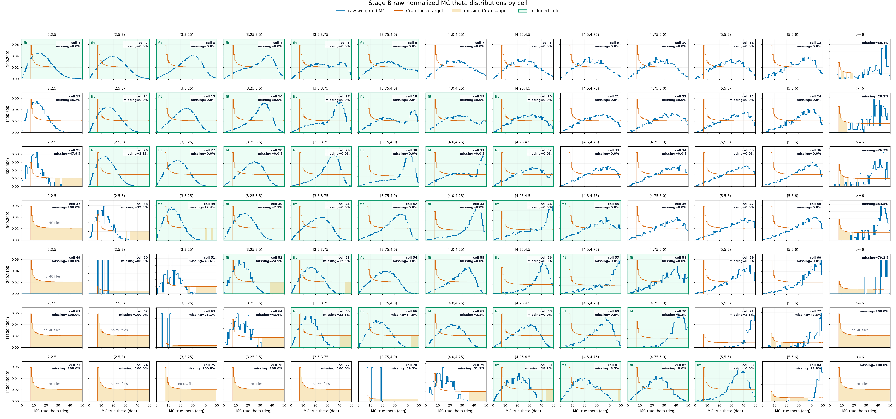
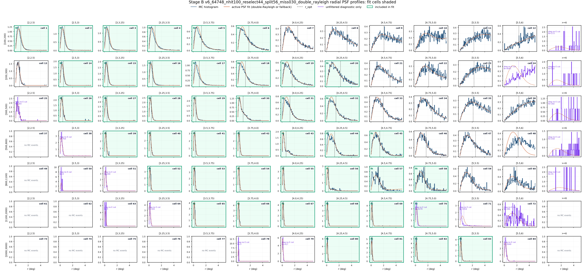


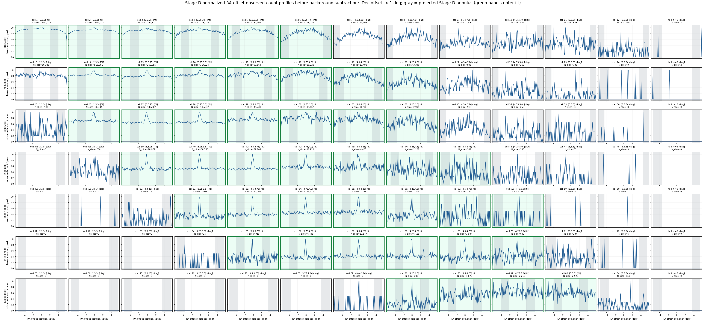
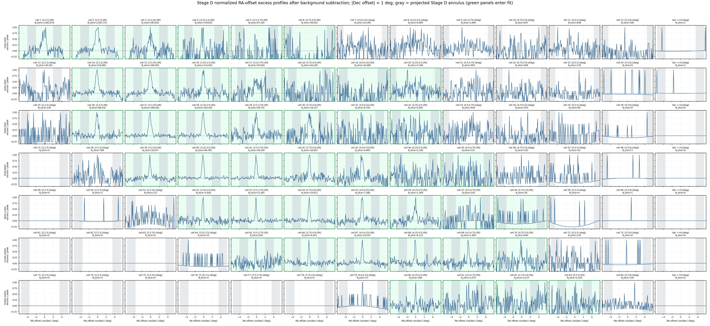
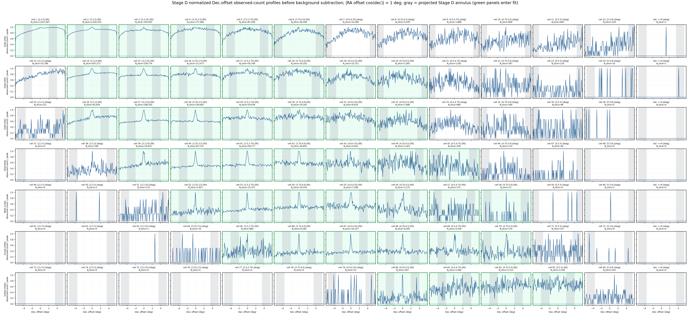
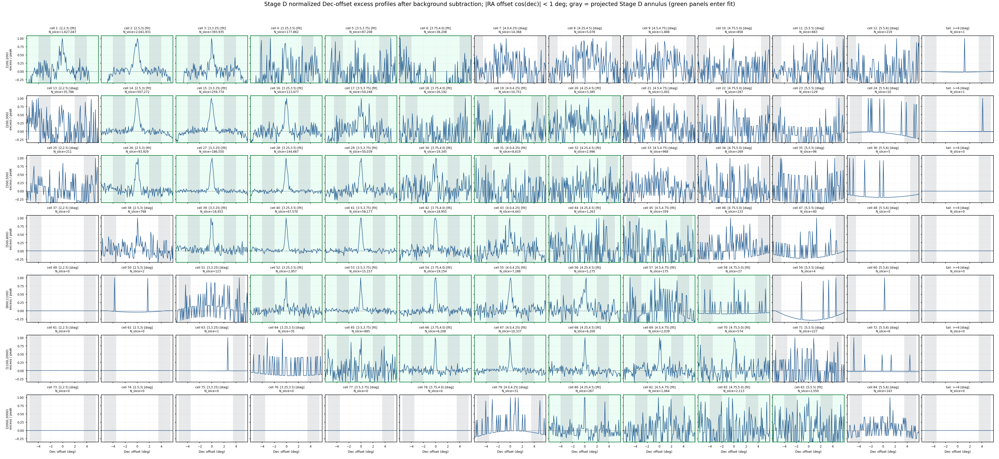
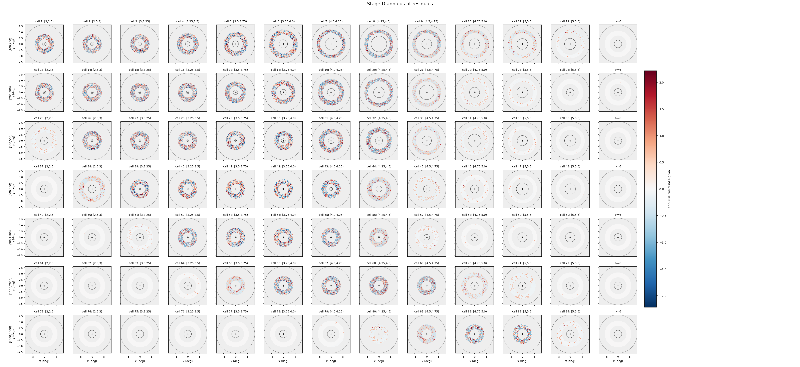

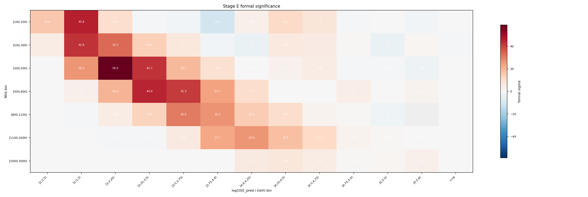
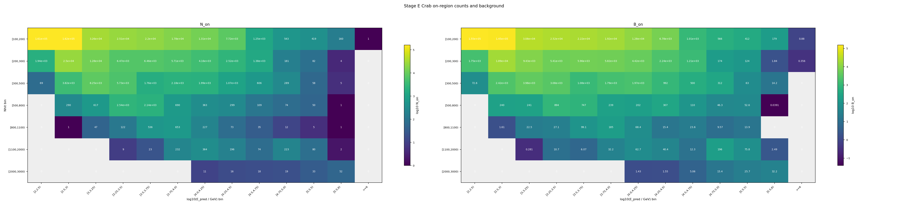
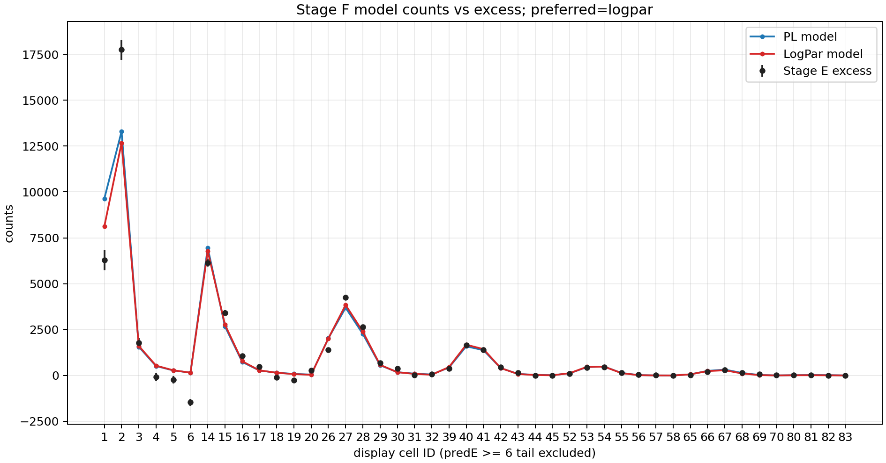
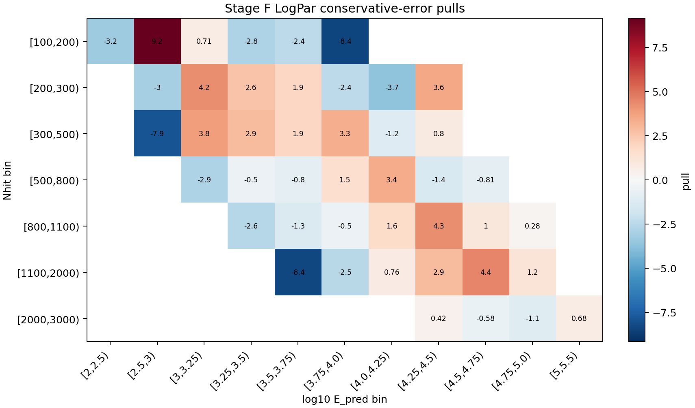
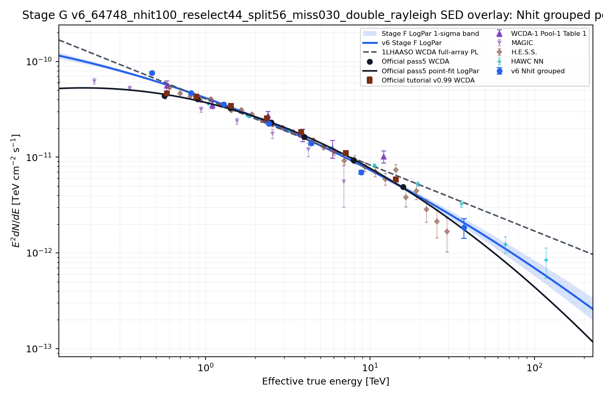
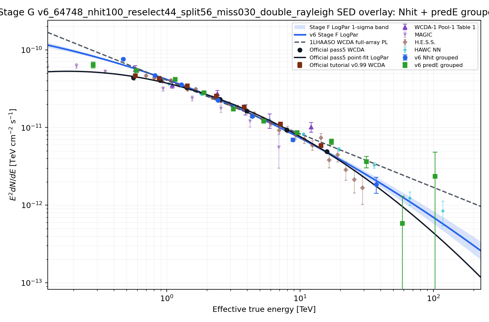
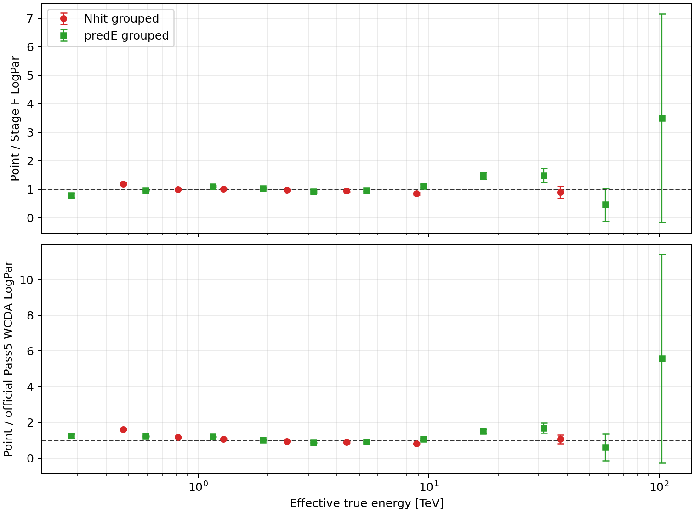
Stage F Fit
Stage F uses the frozen final selector and Scheme B - Double-Rayleigh MC Aperture-conditioned Response. Stage B fits the Crab-theta-weighted MC radial profile with a constrained double-Rayleigh mixture and solves F(r_opt)=0.7129790300890827; sigma_eq=r_opt/1.58 is diagnostic only. Stage A is rebuilt inside r_opt, Stage C is reused, Stage E containment is 1, and no additional containment factor is applied in Stage F/G. The preferred model recorded by Stage F is logpar.
| Fit | Valid | chi2/ndof | p | phi0 | gamma/alpha | beta |
|---|---|---|---|---|---|---|
| PL conservative | True | 548.9/42 | 1.654e-89 | 2.0854e-12 | 2.689 | n/a |
| LogPar conservative | True | 515.7/41 | 2.150e-83 | 2.1832e-12 | 2.746 | 0.05896 |
| PL sqrt-N | True | 927.9/42 | 2.972e-167 | 2.1029e-12 | 2.682 | n/a |
| LogPar sqrt-N | True | 862.9/41 | 1.917e-154 | 2.2070e-12 | 2.756 | 0.0677 |
Stage G SED
Stage G freezes the preferred Stage F spectrum with phi0=2.1832e-12, alpha=2.746, beta=0.05896 at 3 TeV. Quality status: passed.
| Nhit group | Cells | E_eff TeV | E2 dN/dE | Err | chi2/ndof |
|---|---|---|---|---|---|
[100,200) | 1;2;3;4;5;6 | 0.4712 | 7.6235e-11 | 2.288e-12 | 150.4/5 |
[200,300) | 15;16;17;18;19;20;21 | 0.8146 | 4.7037e-11 | 1.234e-12 | 69.72/6 |
[300,500) | 28;29;30;31;32;33;34 | 1.287 | 3.5874e-11 | 6.897e-13 | 101.2/6 |
[500,800) | 42;43;44;45;46;47;48 | 2.427 | 2.2360e-11 | 5.175e-13 | 24.18/6 |
[800,1100) | 56;57;58;59;60;61;62 | 4.393 | 1.3943e-11 | 5.199e-13 | 28.93/6 |
[1100,2000) | 70;71;72;73;74;75 | 8.835 | 6.9336e-12 | 3.344e-13 | 92.28/5 |
[2000,3000) | 86;87;88;89 | 37.3 | 1.8482e-12 | 4.299e-13 | 1.975/3 |
| PredE group | Cells | E_eff TeV | E2 dN/dE | Err | chi2/ndof |
|---|---|---|---|---|---|
[2,2.5) | 1 | 0.281 | 6.4083e-11 | 5.725e-12 | 2.6143e-30/0 |
[2.5,3) | 2;15;28 | 0.5919 | 5.4205e-11 | 1.197e-12 | 151.6/2 |
[3,3.25) | 3;16;29;42 | 1.154 | 4.1533e-11 | 8.860e-13 | 25.35/3 |
[3.25,3.5) | 4;17;30;43;56 | 1.904 | 2.7993e-11 | 6.755e-13 | 28.87/4 |
[3.5,3.75) | 5;18;31;44;57;70 | 3.161 | 1.7185e-11 | 5.198e-13 | 74.87/5 |
[3.75,4.0) | 6;19;32;45;58;71 | 5.355 | 1.2022e-11 | 4.779e-13 | 95.15/5 |
[4.0,4.25) | 20;33;46;59;72 | 9.474 | 8.5776e-12 | 4.755e-13 | 26.29/4 |
[4.25,4.5) | 21;34;47;60;73;86 | 17.22 | 6.5333e-12 | 5.439e-13 | 27.55/5 |
[4.5,4.75) | 48;61;74;87 | 31.5 | 3.6280e-12 | 6.080e-13 | 18.06/3 |
[4.75,5.0) | 62;75;88 | 58.43 | 5.7885e-13 | 7.234e-13 | 1.763/2 |
[5,5.5) | 89 | 102.8 | 2.3495e-12 | 2.465e-12 | 1.3440e-32/0 |
Metadata Audit
Main-input metadata files were scanned for legacy cache/model path tokens. Status: passed.
Final v6 Fit Parameters
The preferred conservative-error fit is logpar at pivot energy 3 TeV, using dN/dE = phi0 * (E/E0)^[-alpha - beta * ln(E/E0)].
| Parameter | Best fit +/- 1 sigma | Unit |
|---|---|---|
phi0 | 2.1832158e-12 ± 3.391489e-14 | TeV^-1 cm^-2 s^-1 |
alpha | 2.746389 ± 0.0178726 | dimensionless |
beta | 0.05895776 ± 0.0116003 | dimensionless |
| Metric | Value |
|---|---|
| Fit valid | True |
| chi2 | 515.7377 |
| ndof | 41 |
| chi2/ndof | 12.57897 |
| p-value | 2.149614e-83 |
| Delta chi2 (PL - LogPar) | 33.18877 |
| Physical flux status | ok |
ok, but chi2/ndof=12.579 and p=2.1496e-83 indicate poor global goodness of fit.